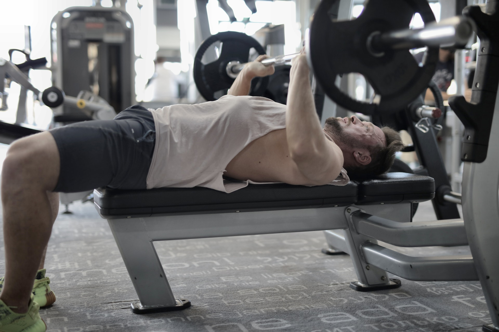
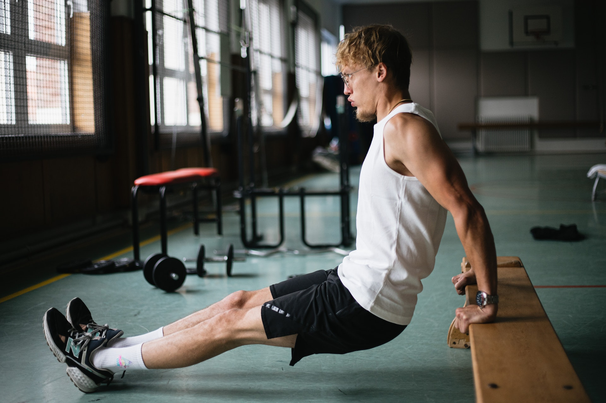
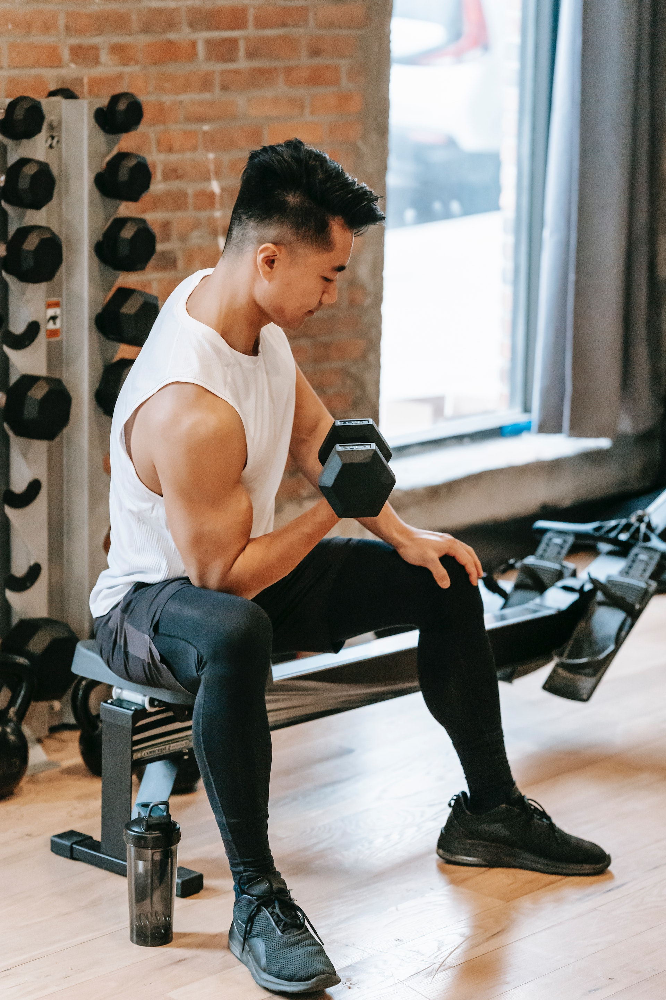
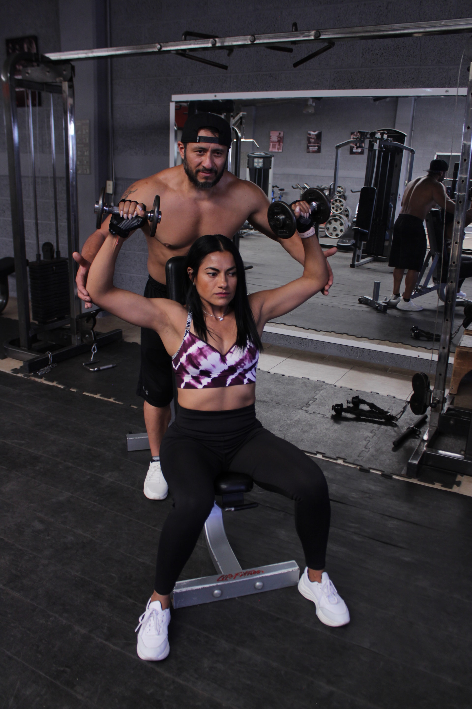
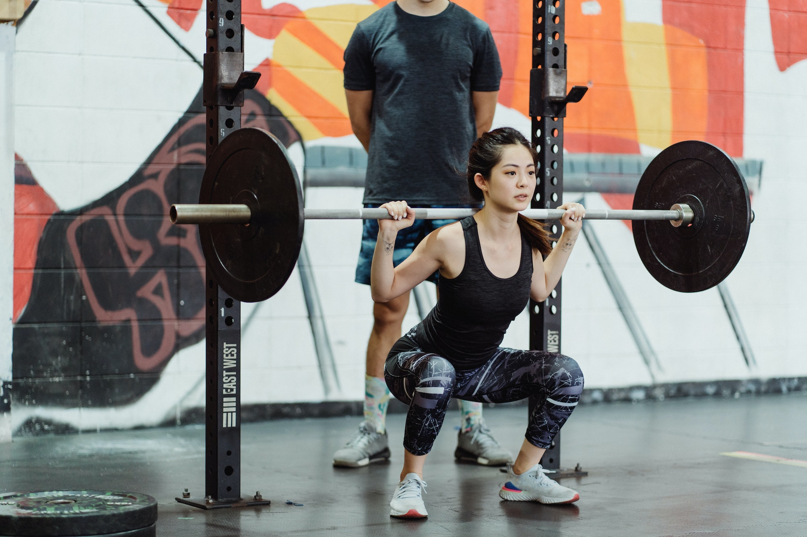
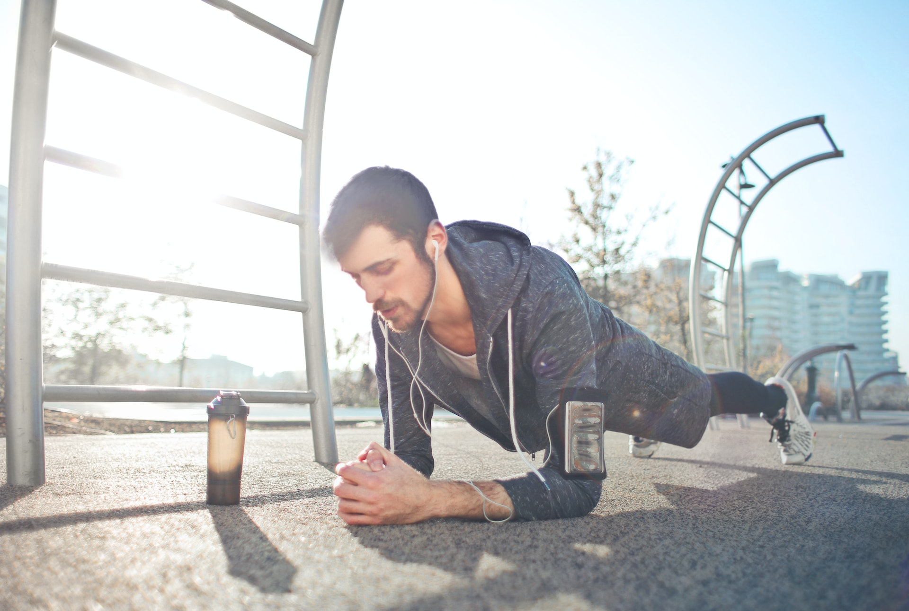
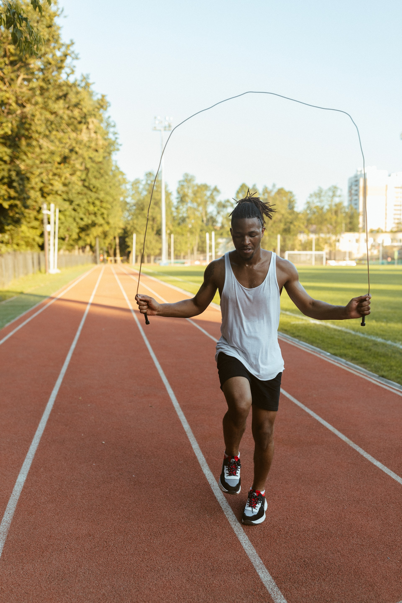

Chest:

•Incline Dumbbell Chest Press, Incline Chest Press Machine, Incline Smith
Machine Chest Press
•Flat Bench Press, Chest Press Machine, Dumbbell Chest Press
•Cable (high to low) Chest Press, Chest Dips
Triceps:

•One Arm Cross-Body Cable Extension
•Cable Overhead Extension
•Bodyweight Dips
Back:

•Smith Machine Barbell Row
•Chest Supported T-Bar Row
•Seated Cable Row
•Medium Grip Lat Pulldown
Biceps:

•Standing Dumbbell Curls, Sitting Dumbbell Curls
•Cable Hammer Curls, Dumbbell Hammer Curls
•Preacher Curls
Shoulders:

•Dumbbell Shoulder Press
•Seated Dumbbell Front Raise, Cable Front Raise
•Side Cable Lateral Raise
•Rear Pec Deck Fly Machine
•Shoulder Shrugs
Legs:

•Barbell Back Squat
•Leg Press
•Leg Curl
•Leg Extension
•Calf Raise
Abs:

•Russian Twists
•Knee-To-Chests
•Bicycle Kicks
•Plank
•Crunches
Cardio Exercises:

•Jump Rope
•Biking in Place
•Running in Place
•Burpees